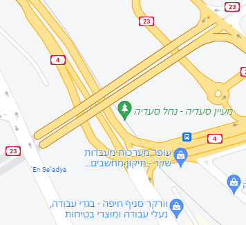

נחל סעדיה
נחל סעדיה הוא נחל איתן הזורם למרגלות הכרמל. נחל זה הוא אחד מיובליו של נחל הקישון ומקורו במעיין סעדיה (עין סעדיה) ובמעיינות קטנים יותר לאורכו של העתק יגור, בין צומת הקריות לבית חרושת "הזרע" (שנהרס ב-2010). הנחל נשפך לים התיכון במלחת הקישון. הנחל, גדותיו ושטחי אחו לחים סביבו, מקיימים מערכת אקולוגית ייחודית עתירת מיני חי וצומח. תוואי הנחל עובר במרכזו של צומת מסחר ואזור תעשייה של מפרץ חיפה ומהווה פינת חמד בלב האזור הסואן אך גם המחשה למערכת אקולוגית ייחודית שנקברה תחת פיתוח שאינו בר קיימא.